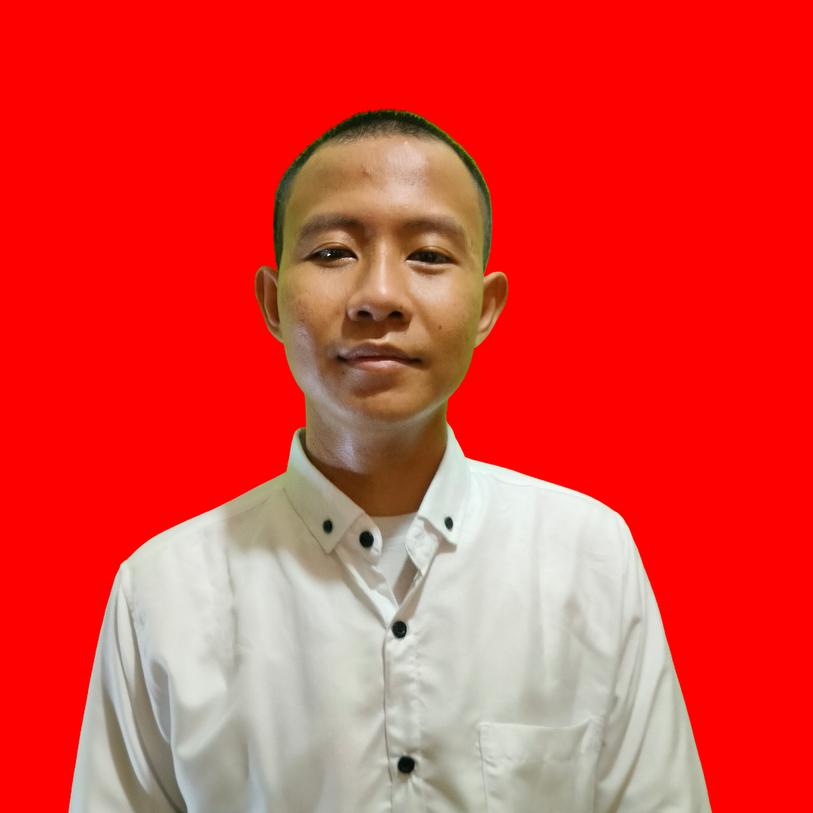

PROFIL PROFESIONAL · TEKNIK INFORMATIKA
Hajijin Amri
Fresh graduate S1 Teknik Informatika dari STMIK IKMI Cirebon dengan IPK 3,65 dan latar belakang Teknik Komputer dan Jaringan. Memiliki dasar instalasi perangkat, pengkabelan, konfigurasi routing dan switching, administrasi sistem, serta pengelolaan data dan dokumentasi.
Tersertifikasi Junior Network Administrator dan telah mengembangkan ByeTrash, sistem klasifikasi sampah berbasis computer vision yang di-deploy di Google Cloud melalui REST API. Berpengalaman mendukung pengelolaan dokumen akreditasi serta aktif mempelajari cloud computing, Linux, data engineering, dan computer vision.
Pengalaman
| Peran | Instansi | Periode | Tanggung jawab |
|---|---|---|---|
| Administrasi Data | Tim Pendukung Akreditasi Program Studi Teknik Informatika | Maret 2025 — Juli 2025 |
|
Pendidikan
| Institusi | Jurusan | Tahun |
|---|---|---|
| STMIK IKMI Cirebon | Teknik Informatika | 2022 — 2026 |
| SMKN 1 Kota Cirebon | Teknik Komputer dan Jaringan | 2018 — 2021 |
Keahlian
Sertifikasi
Pencapaian profesional dan keahlian teknis yang saya miliki.
Sertifikasi & Pelatihan3 dokumen terverifikasi⌄
Kontak & Media Sosial
Terhubung melalui kanal profesional, sosial, dan publikasi.